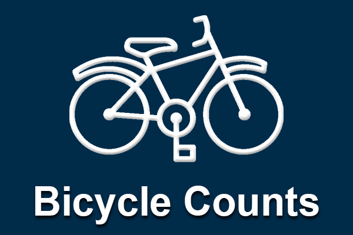
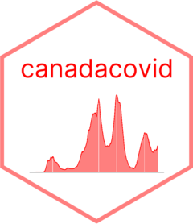
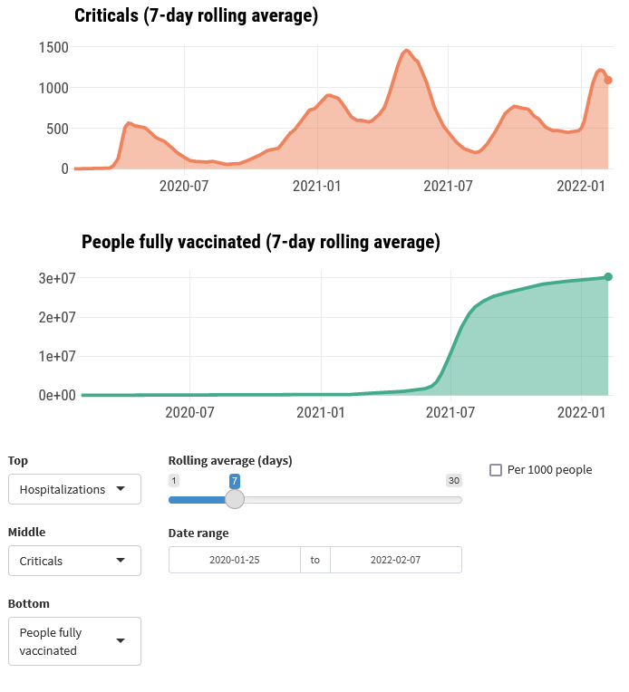
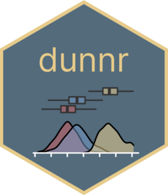
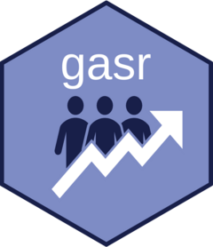

A collection of my open source projects.

An end-to-end machine learning project to predict bike ridership in Halifax, Nova Scotia.

A Shiny dashboard compiling tweets from the TidyTuesday project.

An R package for the Canadian COVID-19 tracker API.

A Shiny dashboard reporting and visualizing the latest COVID-19 data in Canada.

My personal R package of commonly used functions and templates.

An R package for simulating goal attainment scaling (GAS) data.

An Introduction to Statistical Learning translated with the tidyverse and tidymodels.
No matching items